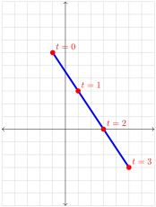

At this point you should be very familiar with graphing linear equations of the form \(y=mx+b\text{,}\) where \(m\) is the slope of the line and \(b\) is the \(y\)-intercept. Unfortunately, there is no equivalent way of representing lines in \(\R^3\text{,}\) or better yet, \(\R^n\text{.}\) In this section we will develop an alternative way of representing lines and discuss the generalization of the graphs of linear equations in higher dimensions.
Subsection1.3.1Parametric Lines in \(\R^2\)
Exploration1.3.1.
Imagine a ladybug crawling around a plane. At every instant in time, the ladybug’s position in the plane can be described by an ordered pair \((x, y)\text{.}\) Coordinates \(x\) and \(y\) are functions of time. Suppose the position of the ladybug at time \(t\) is given by:
Our goal is to sketch the path of the ladybug during the time interval \(0\leq t\leq 3\text{.}\) To do this we will make a table of values, just like you did when you first started sketching graphs of functions.
The point \((x, y)\text{,}\) corresponding to each value of \(t\) is the location of the ladybug in the coordinate plane at time \(t\text{.}\)

It appears that the points corresponding to \(t=0, 1, 2, 3\) lie on a line with slope \(-\frac{3}{2}\text{.}\) In the next problem we will find the equation of the line that contains the path of the ladybug.
that described the path of a ladybug in the plane. We will now consider these equations in a broader context as simply describing a curve in the plane. We conjectured that the curve described by these equations is a line with slope \(-\frac{3}{2}\text{.}\) We will now find the equation of this line.
One approach to finding the equation is to solve one of the given equations for \(t\text{,}\) then substitute into the other equation. Solving \(x=2t-1\) for \(t\) gives us
are called parametric equations, and \(t\) is called a parameter.
When given an equation of the form \(y=mx+b\text{,}\) we recognize it as an equation whose graph is a line and we don’t need to make a table of values to sketch the graph of the equation. We should be able to do the same for parametric equations of lines. In the next Exploration we will examine our equations carefully to see if we can discern any patterns that would help us plot the line without making a table of values.
Exploration1.3.3.
Let’s return to parametric equations from the previous problem.
Observe that every time \(t\) increases by \(1\text{,}\)\(x\) increases by \(2\) and \(y\) decreases by \(3\text{.}\) An increase by \(2\) in the \(x\)-coordinate combined with a decrease of \(3\) in the \(y\)-coordinate corresponds to the coefficients \(2\) and \(-3\) of \(t\) in the parametric equations. Our findings are in agreement with the fact that the slope of the line is \(-\frac{2}{3}\text{.}\)
We will capture the ``rise" and ``run" aspect of the line by using vector \(\mathbf{v}=\begin{bmatrix}2\\-3\end{bmatrix}\text{.}\) Sketching \(\mathbf{v}\) together with the line, we find that the vector is parallel to the line.
Vector \(\mathbf{v}\) is called a direction vector. Observe that the components of \(\mathbf{v}\) are the coefficients of \(t\) in the parametric equations.
Next, let’s turn our attention to constants \(-1\) and \(6\text{.}\) They are the values of \(x\) and \(y\) when \(t=0\text{,}\) and correspond to the point \((-1, 6)\text{.}\)
Recall that in Exploration 1.3.1 we said that the given parametric equations describe the position of a ladybug crawling in the coordinate plane. If we are concerned with the position of the ladybug at time \(t\text{,}\) the point \((-1, 6)\) is very important - this is where the bug is located when \(t=0\text{.}\) But, if we are using parametric equations simply to describe the line \(y=-\frac{3}{2}x+\frac{9}{2}\text{,}\) without regard for when the bug is located at each point, then the point \((-1, 6)\) is not any more special than any other point on the line. In fact, we can use any other point on this line to find another set of parametric equations that describe the same line. In Exercise 1.3.7.1 you will be asked to show that equations
Let \(\mathbf{v}=\begin{bmatrix}a\\b\end{bmatrix}\) be a direction vector for line \(l\text{,}\) and let \((x_0, y_0)\) be an arbitrary point on \(l\text{.}\) Then the following parametric equations describe \(l\text{:}\)
To find a set of parametric equations for \(l\text{,}\) we need a point on \(l\) and a direction vector. Point \((2, -5)\) is on \(l\text{.}\) Line \(l\) is parallel to \(k\text{,}\) so we can use \(\begin{bmatrix}3\\-8\end{bmatrix}\text{,}\) a direction vector for \(k\text{,}\) as a direction vector for \(l\text{.}\) This gives us the following parametric equations for \(l\text{:}\)
Observe that every time \(t\) increases by \(1\text{,}\)\(x\) increases by \(4\text{,}\)\(y\) increases by \(8\text{,}\) and \(z\) increases by \(5\text{.}\) The pattern ``out \(4\text{,}\) over \(8\text{,}\) up \(5\)" is illustrated in the diagram.
We will use a direction vector \(\mathbf{v}=\begin{bmatrix}4\\8\\5\end{bmatrix}\) to represent the direction of the line. Note that the components of \(\mathbf{v}\) are the same as the coefficients of \(t\) in the parametric equations.
As before, the point \((1, -3, 1)\) may be replaced with any other point on the line to produce a different set of parametric equations describing the same line.
Let \(\mathbf{v}=\begin{bmatrix}a\\b\\c\end{bmatrix}\) be a direction vector for line \(l\text{,}\) and let \((x_0, y_0, z_0)\) be an arbitrary point on \(l\text{.}\) Then the following parametric equations describe \(l\text{:}\)
As before, using these in explicit situations is the most important part:
Example1.3.4.
Find a set of parametric equations for a line in \(\R^3\) that passes through \((1, -2, 4)\) and \((-3, 1, 1)\text{.}\)
We need a point and a direction vector. To find the direction vector we will use the ``head-tail" formula (Formula 1.1.8) to find the vector whose tail is at \((1, -2, 4)\) and whose head is at \((-3, 1, 1)\text{.}\) The direction vector is
For our point, we can pick either of the two given points. The equations will differ depending on the point we pick, but they will describe the same line. Remember, parametric representations are not unique! If we choose \((1, -2, 4)\) for our point we get the following set of parametric equations:
After working with parametric equations of lines in \(\R^2\) and \(\R^3\text{,}\) it should be easy to surmise what parametric equations of lines look like for lines in \(\R^n\text{.}\)
Formula1.3.5.
Let \(\mathbf{v}=\begin{bmatrix}v_1\\v_2\\\vdots\\v_n\end{bmatrix}\) be a direction vector for line \(l\) in \(\R^n\text{,}\) and let \((a_1, a_2,\ldots , a_n)\) be an arbitrary point on \(l\text{.}\) Then the following parametric equations describe \(l\text{:}\)
These equations describe the line by providing coordinates of individual points on the line, as shown in the left figure below.
If we consider the points on the line to be heads of vectors, then we can think of the line as being ``traced" by a vector as \(t\) changes (See above, right). We can capture this algebraically by using a vector equation for the line:
Note that the direction vector \(\begin{bmatrix}2\\-3\end{bmatrix}\) and the point \((-1, 6)\text{,}\) now vector \(\begin{bmatrix}-1\\6\end{bmatrix}\text{,}\) are easy to identify in the equation.
We can use vector equations to describe lines in \(\R^n\) using the following formula.
Formula1.3.6.
Let \(\mathbf{v}=\begin{bmatrix}v_1\\v_2\\\vdots\\v_n\end{bmatrix}\) be a direction vector for line \(l\) in \(\R^n\text{,}\) and let \((a_1, a_2,\ldots , a_n)\) be an arbitrary point on \(l\text{.}\) Then the following vector equation describes \(l\text{:}\)
You are probably familiar with the expression “two points determine a line.” This means that given two distinct points, there is exactly one line that passes through both of them.
You are probably also familiar with the fact that three non-collinear points determine a plane. (This is why photographers use tripods for stability, while four-legged chairs often wobble!) Is there another way to determine a plane?
The diagram below shows several planes perpendicular to vector \(\mathbf{n}\text{.}\) In fact, there are infinitely many such planes. Vector \(\mathbf{n}\) does not determine a plane, but if we know of a point \(P\) contained in the plane, then together, \(P\) and \(\mathbf{n}\) describe a unique plane.
Definition1.3.7.Normal Vector.
A nonzero vector \(\mathbf{n}\) is called a normal for a plane if it is orthogonal to every vector in the plane.
There are details in the definition worth flagging up, such as the wordin "to every vector". To emphasize this, we demonstrate an example in detail.
Example1.3.8.
The standard unit vector \(\mathbf{k}\) is orthogonal to every vector in the \(xy\)-plane, therefore it is a normal for the \(xy\)-plane.
Given a point \(P_{0} = P_{0}(x_{0}, y_{0}, z_{0})\) and a nonzero vector \(\mathbf{n}\text{,}\) there is a unique plane through \(P_{0}\) with normal \(\mathbf{n}\text{.}\)
This fact can be used to give a very simple description of a plane. Observe that a point \(P = P(x, y, z)\) lies on this plane if and only if the vector \(\overrightarrow{P_{0}P}\) is orthogonal to \(\mathbf{n}\) (i.e. \(P\) lies in the plane if and only if \(\mathbf{n} \cdot \overrightarrow{P_{0}P} = 0\)).
Let \(\mathbf{n}=\begin{bmatrix}a\\b\\c\end{bmatrix}\text{.}\) By ``head-tail" formula (Formula 1.1.7), we have: \(\overrightarrow{P_{0}P} = \begin{bmatrix}
x - x_{0}\\
y - y_{0}\\
z - z_{0}
\end{bmatrix}\text{.}\) So, \(P(x, y, z)\) lies in the plane if and only if
\begin{equation*}
\begin{bmatrix}a\\b\\c\end{bmatrix}\cdot\begin{bmatrix}
x - x_{0}\\
y - y_{0}\\
z - z_{0}
\end{bmatrix}=a(x-x_0)+b(y-y_0)+c(z-z_0)=0
\end{equation*}
We summarize this result as a theorem.
Theorem1.3.9.
The plane through \(P_{0}(x_{0}, y_{0}, z_{0})\) with a normal vector
\begin{equation*}
\mathbf{n} =
\begin{bmatrix}
a\\
b\\
c
\end{bmatrix}\neq\mathbf{0}
\end{equation*}
Find an equation of the plane through \(P_{0}(1, -1, 3)\) with \(\mathbf{n} =
\begin{bmatrix}
3\\
-1\\
2
\end{bmatrix}\) as a normal vector. \begin{explanation} Here the equation becomes
Figure1.3.11.GeoGebra interactive below shows the plane, together with point \(P_0\) and the normal vector. RIGHT-CLICK and DRAG to rotate the image for a better view. A larger version of this activity is available here 2
https://www.geogebra.org/calculator/gsaag2dx
.
As demonstrated in Example 1.3.10, we can distribute coefficients \(a\text{,}\)\(b\) and \(c\) of (1.3.1) as follows:
Setting \(d = ax_{0} + by_{0} + cz_{0}\text{,}\) shows that every plane with a normal vector \(\mathbf{n} =
\begin{bmatrix}
a\\
b\\
c
\end{bmatrix}\) has a linear equation of the form
\begin{equation}
ax + by + cz = d\tag{1.3.2}
\end{equation}
for some constant \(d\text{.}\) Conversely, the graph of this equation is a plane with \(\mathbf{n} =
\begin{bmatrix}
a\\
b\\
c
\end{bmatrix}\) as a normal vector (assuming that \(a\text{,}\)\(b\text{,}\) and \(c\) are not all zero).
Example1.3.12.
Find an equation of the plane through \(P_{0}(3, -1, 2)\) that is parallel to the plane with equation \(2x - 3y = 6\text{.}\)
The plane with equation \(2x -3y = 6\) has a normal vector \(\mathbf{n} =
\begin{bmatrix}
2\\
-3\\
0
\end{bmatrix}\text{.}\) Because the two planes are parallel, \(\mathbf{n}\) serves as a normal for the plane we seek, so the equation is \(2x - 3y = d\) for some \(d\) by (1.3.2). Insisting that \(P_{0}(3, -1, 2)\) lies on the plane determines \(d\text{;}\) that is, \(d = 2 \cdot 3 - 3(-1) = 9\text{.}\) Hence, the equation is \(2x - 3y = 9\text{.}\)
Figure1.3.13.GeoGebra interactive below shows the two planes, together with point \(P_0\) and the normal vector. RIGHT-CLICK and DRAG to rotate the image for a better view. A larger version of this activity is available here 3
https://www.geogebra.org/calculator/unceva9g
.
Subsection1.3.6Linear Equations and their Graphs: From Lines to Hyperplanes
An equation of the form \(ax+by=d\) is a linear equation whose graph is a line in \(\R^2\text{.}\) If we solve for \(y\) in terms of \(x\text{,}\) we obtain a more familiar form of this equation, \(y=-\frac{a}{b}x+\frac{d}{b}\text{.}\) The slope of the corresponding line is \(m=-\frac{a}{b}\text{.}\) Observe that a line perpendicular to this line has the slope \(\frac{b}{a}\text{.}\) If we interpret \(a\) as a horizontal ``run" and \(b\) as a vertical ``rise", we see that the vector \(\begin{bmatrix}a\\b\end{bmatrix}\) is perpendicular to the line \(ax+by=d\text{.}\) You can use the following GeoGebra interactive to solidify your understanding of this.
Figure1.3.14.A larger version of this activity is available here 4
https://www.geogebra.org/calculator/tg2duwqk
.
The idea of coefficients in front of variables forming components of a normal vector should be very familiar to you. Recall that the graph of \(ax+by+cz=d\) is a plane in \(\R^3\) with a normal vector \(\mathbf{n}=\begin{bmatrix}a\\b\\c\end{bmatrix}\text{.}\)
Lines and planes may seem very different, but they are all graphs of linear equations, just in different dimensions. In general, an equation of the form
is called a linear equation in \(n\) variables. The graph of such an equation, for \(n\gt3\text{,}\) is called a hyperplane. The vector in \(\R^n\) whose components are the coefficients \(a_1, a_2, \dots ,a_n\) is orthogonal to every vector in the hyperplane. Unfortunately, hyperplanes are impossible to see, but we can often use insights we gain from working with lines and planes and generalize them to the invisible world of higher dimensions.
Find two different parametric representations for a line with slope \(3\) and \(y\)-intercept \((0, -4)\text{.}\)
3.
Find a parametric representation for line \(l\) passing through \((4, -2, 5)\) if line \(l\) has a direction vector parallel to that of the line with parametric equations